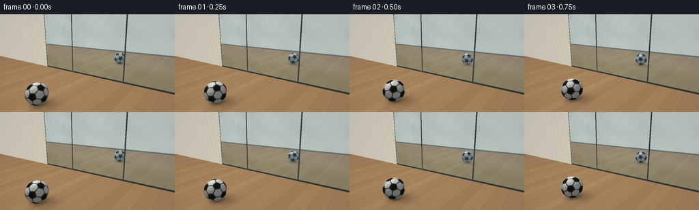
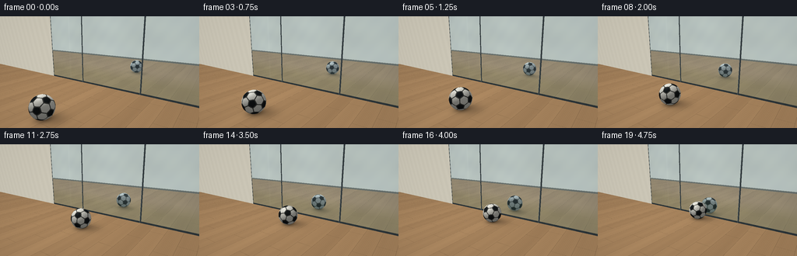

CODING AGENTS AS PIXEL WORLD MODELS
traex/GPT-6.1-Sol · phygen_062
点击播放 · 原生 RGB 像素
逐轮保存的候选
回放视频、检查图与代码变化。
每份候选均可单独播放。实际图片检查记录在下方工具轨迹中。
候选 01播放与检查图
点击播放 · 原生 RGB 像素


展开代码变化
--- 上一保存版本
+++ 本次保存版本
@@ -0,0 +1,185 @@
+"""Procedurally render a rolling football and its geometrically exact glass reflection."""
+from pathlib import Path
+import numpy as np
+from PIL import Image
+import artifact_io
+
+ROOT=Path(__file__).resolve().parent
+W,H,S=256,144,3
+SW,SH=W*S,H*S
+CAM=np.array([5.,-8.,3.3])
+TARGET=np.array([0.,-.8,1.1])
+FWD=(TARGET-CAM); FWD/=np.linalg.norm(FWD)
+RIGHT=np.cross(FWD,[0.,0.,1.]); RIGHT/=np.linalg.norm(RIGHT)
+UP=np.cross(RIGHT,FWD)
+yy,xx=np.mgrid[:SH,:SW]
+rays=FWD[None,None,:]+RIGHT[None,None,:]*((xx+.5-SW/2)/(220*S))[...,None]-UP[None,None,:]*((yy+.5-SH/2)/(220*S))[...,None]
+rays/=np.linalg.norm(rays,axis=-1,keepdims=True)
+O=np.broadcast_to(CAM,rays.shape)
+R=.48
+LIGHT=np.array([-3.5,-4.8,7.8])
+
+# Exact face planes of a truncated icosahedron: twelve pentagons and twenty hexagons.
+phi=(1+np.sqrt(5))/2
+verts=[]
+for a in [-1,1]:
+ for b in [-phi,phi]:
+ verts.extend([[0,a,b],[a,b,0],[b,0,a]])
+V=np.array(verts,dtype=float)
+D=np.linalg.norm(V[:,None]-V[None,:],axis=-1)
+adj=np.isclose(D,2)
+normals=[]; heights=[]; black=[]
+for i,v in enumerate(V):
+ n=v/np.linalg.norm(v); tv=(2*v+V[np.flatnonzero(adj[i])[0]])/3
+ normals.append(n); heights.append(tv@n); black.append(True)
+for i in range(12):
+ for j in range(i+1,12):
+ for k in range(j+1,12):
+ if adj[i,j] and adj[j,k] and adj[i,k]:
+ n=V[[i,j,k]].sum(axis=0);n/=np.linalg.norm(n)
+ normals.append(n); heights.append(((2*V[i]+V[j])/3)@n);black.append(False)
+FACE=np.array(normals)/np.array(heights)[:,None]
+BLACK=np.array(black)
+
+
+def wood(P,center):
+ x,y=P[...,0],P[...,1]
+ plank=np.floor((x+10)/.67)
+ # Offset board ends, fine continuous wood grain, and narrow inset joins.
+ grain=np.sin(x*108+2.8*np.sin(y*1.9+x*3))+ .45*np.sin(x*223+np.sin(y*3.5))
+ low=np.sin(x*10+y*.39)+.6*np.sin(x*19-y*.23)
+ variation=3.8*np.sin(plank*2.37)+1.2*np.cos(plank*.9)
+ tone=variation+grain*1.5+low*1.35
+ c=np.stack([169+tone,133+tone*.86,94+tone*.65],axis=-1)
+ sx=np.mod(x+10,.67)
+ ends=np.mod(y+np.mod(plank*1.618,2.5),2.9)
+ seam=(sx<.008)|(ends<.007)
+ c[seam]*=.76
+ # Soft area-light shadow and a tight contact shadow, translated with the ball.
+ dx=x-center[0];dy=y-center[1]
+ contact=np.exp(-((dx/.32)**2+(dy/.33)**2)*1.4)
+ cast=np.exp(-(((dx-.23)/.65)**2+((dy-.22)/.54)**2)*1.3)
+ c*= (1-.42*contact-.22*cast)[...,None]
+ # Broad soft skylight on the room floor.
+ c*= (.93+.07*np.exp(-((x+2)**2+(y+3)**2)/28))[...,None]
+ return np.clip(c,0,255)
+
+
+def sphere_hit(orig,d,center):
+ oc=orig-center
+ b=np.sum(oc*d,axis=-1);c=np.sum(oc*oc,axis=-1)-R*R
+ disc=b*b-c
+ t=-b-np.sqrt(np.maximum(disc,0))
+ return t,(disc>0)&(t>1e-4)
+
+
+def ball(P,dirs,center,theta):
+ n=(P-center)/R
+ # Inverse no-slip rotation around the world's x axis, identical for reflected rays.
+ cs,sn=np.cos(theta),np.sin(theta)
+ loc=np.stack([n[:,0],cs*n[:,1]+sn*n[:,2],-sn*n[:,1]+cs*n[:,2]],axis=-1)
+ # A fixed starting tilt creates an attractive conventional pentagon arrangement.
+ a=.32;lc=loc.copy()
+ loc[:,0]=np.cos(a)*lc[:,0]+np.sin(a)*lc[:,2]
+ loc[:,2]=-np.sin(a)*lc[:,0]+np.cos(a)*lc[:,2]
+ score=loc@FACE.T
+ idx=np.argmax(score,axis=1)
+ best=np.max(score,axis=1)
+ second=np.partition(score,-2,axis=1)[:,-2]
+ edge=(best-second)<.017
+ isblack=BLACK[idx]
+ color=np.tile(np.array([231.,230.,220.]),(len(P),1))
+ color[isblack]=[23.,27.,29.]
+ # Recessed stitched grooves and subtle grain in the synthetic leather.
+ color[edge]=[72.,73.,69.]
+ pebble=np.sin(loc[:,0]*420+np.sin(loc[:,2]*63))*np.sin(loc[:,1]*385+loc[:,2]*29)
+ color+=pebble[:,None]*1.4
+ ld=LIGHT-P;ld/=np.linalg.norm(ld,axis=1,keepdims=True)
+ diffuse=np.maximum(np.sum(n*ld,axis=1),0)
+ view=-dirs
+ half=ld+view; half/=np.linalg.norm(half,axis=1,keepdims=True)
+ spec=np.maximum(np.sum(n*half,axis=1),0)**45
+ ambient=.48+.09*n[:,2]
+ color*= (ambient+.47*diffuse)[:,None]
+ color+=spec[:,None]*17
+ return np.clip(color,0,255)
+
+
+def room(orig,d,center,theta):
+ # The room is also rendered along reflected rays, so all reflected geometry is coherent.
+ tz=-orig[...,2]/np.where(abs(d[...,2])>1e-8,d[...,2],1e-8)
+ py=orig[...,1]+tz*d[...,1]
+ floor=(tz>0)&(py<.001)
+ P=orig+tz[...,None]*d
+ col=np.zeros(d.shape)
+ col[:]=[182,188,184]
+ # The wall behind the viewer appears faintly in glass.
+ tb=(-10-orig[...,1])/np.where(abs(d[...,1])>1e-8,d[...,1],1e-8)
+ pb=orig+tb[...,None]*d
+ back=(tb>0)&((~floor)|(tb<tz))
+ wz=pb[...,2]
+ walltone=3*np.sin(pb[...,0]*.8)+2*np.sin(wz*2)
+ col[back]=np.stack([207+walltone,201+walltone,184+walltone],axis=-1)[back]
+ trim=back&(wz<.16)
+ col[trim]=[98,94,82]
+ floor&=(~back)
+ if np.any(floor):col[floor]=wood(P[floor],center)
+ tb,hit=sphere_hit(orig,d,center)
+ nearest=np.where(floor,tz,np.inf)
+ nearest=np.where(back,np.minimum(nearest,np.maximum((-10-orig[...,1])/np.where(abs(d[...,1])>1e-8,d[...,1],1e-8),0)),nearest)
+ hit&=tb<nearest
+ if np.any(hit):
+ pp=orig[hit]+tb[hit,None]*d[hit]
+ col[hit]=ball(pp,d[hit],center,theta)
+ return col
+
+
+def render(frame):
+ t=frame/19
+ center=np.array([-.10,-4.4+3.80*t,R])
+ theta=(center[1]+4.4)/R
+ col=room(O,rays,center,theta)
+ # Vertical glazing plane, y=0. Its reflected rays remain in the actual room.
+ tg=-CAM[1]/rays[...,1]
+ Q=O+tg[...,None]*rays
+ window=(tg>0)&(Q[...,2]>=0)&(Q[...,2]<=4.5)&(Q[...,0]>=-4.6)&(Q[...,0]<=4.8)
+ wall=(tg>0)&(Q[...,2]>=0)&(~window)
+ plaster=2*np.sin(Q[...,0]*11+Q[...,2]*3)+.5*np.sin(Q[...,0]*127+Q[...,2]*58)
+ col[wall]=np.stack([204+plaster,199+plaster,183+plaster],axis=-1)[wall]
+ rd=rays.copy();rd[...,1]*=-1
+ reflected=room(Q+rd*1e-5,rd,center,theta)
+ # Transmitted view: an intentionally softly focused garden beyond the tinted glazing.
+ qx,qz=Q[...,0],Q[...,2]
+ foliage=np.clip((1.25-qz)*1.7,0,1)
+ variation=7*np.sin(qx*2.5+qz*4)+4*np.sin(qx*8-qz*6)
+ outdoors=np.stack([151-47*foliage+variation,177-38*foliage+variation,185-65*foliage+variation*.5],axis=-1)
+ reflected=reflected*np.array([.91,.965,1.01])+np.array([2.,4.,5.])
+ # Reflective coated architectural glass preserves the recognizability of the ball.
+ glass=.79*reflected+.21*outdoors
+ glass+=np.exp(-((qx+2.9)/.065)**2)[...,None]*3
+ col[window]=glass[window]
+ # Aluminium frames and a low sill firmly establish this as a vertical window.
+ mullion=np.zeros(window.shape,dtype=bool)
+ for mx in [-4.6,-1.85,2.0,4.8]:mullion|=np.abs(qx-mx)<.040
+ mullion|=(qz<.095)|(qz>4.42)
+ mullion&=window
+ framecolor=np.zeros(col.shape);framecolor[:]=[43,51,54]
+ framecolor+=((np.sin(qx*19+qz*.4)+1)*2)[...,None]
+ col[mullion]=framecolor[mullion]
+ for mx in [-4.6,-1.85,2.0,4.8]:
+ lip=window&(np.abs(qx-(mx-.031))<.007)
+ col[lip]=[104,115,116]
+ # Overlay foreground sphere: it must occlude the window when the two converge.
+ ts,hit=sphere_hit(O,rays,center)
+ hit&=(ts<tg)
+ if np.any(hit):col[hit]=ball(O[hit]+rays[hit]*ts[hit,None],rays[hit],center,theta)
+ # Very gentle photographic corner falloff; supersampling provides clean silhouettes.
+ vig=1-.035*((xx-SW/2)/(SW/2))**2-.018*((yy-SH/2)/(SH/2))**2
+ col*=vig[...,None]
+ im=Image.fromarray(np.uint8(np.clip(col,0,255)))
+ return np.asarray(im.resize((W,H),Image.Resampling.LANCZOS))
+
+if __name__=='__main__':
+ frames=np.stack([render(i) for i in range(20)])
+ artifact_io.save(frames,ROOT)
+ print('Saved 20 RGB frames at 256 x 144, 4 fps.')
可观测工具轨迹
实际执行的命令与返回图片。
命令 1exit 0
/bin/bash -lc 'ls -la && cat prompt.txt && cat GENERATION_RULES.md && cat task_spec.json'
命令 2exit 0
/bin/bash -lc 'cat artifact_io.py && ls .tmp'
命令 3exit 0
/bin/bash -lc "python - <<'PY' import numpy as np C=np.array([5.,-8.,3.3]);T=np.array([0.,-.8,1.1]);f=(T-C);f/=np.linalg.norm(f);r=np.cross(f,[0,0,1]);r/=np.linalg.norm(r);u=np.cross(r,f) for p in [[0,-4.5,.48],[0,-.6,.48],[0,4.5,.48],[0,.6,.48],[-4.8,0,0],[4.8,0,0],[-4.8,0,4],[4.8,0,4]]: v=np.array(p)-C; dep=v@f; print(p, [128+220*(v@r)/dep,72-220*(v@u)/dep]) PY"
命令 4exit 0
/bin/bash -lc "cat > generate.py <<'PY'
\"\"\"Procedurally render a rolling football and its geometrically exact glass reflection.\"\"\"
from pathlib import Path
import numpy as np
from PIL import Image
import artifact_io
ROOT=Path(__file__).resolve().parent
W,H,S=256,144,3
SW,SH=W*S,H*S
CAM=np.array([5.,-8.,3.3])
TARGET=np.array([0.,-.8,1.1])
FWD=(TARGET-CAM); FWD/=np.linalg.norm(FWD)
RIGHT=np.cross(FWD,[0.,0.,1.]); RIGHT/=np.linalg.norm(RIGHT)
UP=np.cross(RIGHT,FWD)
yy,xx=np.mgrid[:SH,:SW]
rays=FWD[None,None,:]+RIGHT[None,None,:]*((xx+.5-SW/2)/(220*S))[...,None]-UP[None,None,:]*((yy+.5-SH/2)/(220*S))[...,None]
rays/=np.linalg.norm(rays,axis=-1,keepdims=True)
O=np.broadcast_to(CAM,rays.shape)
R=.48
LIGHT=np.array([-3.5,-4.8,7.8])
# Exact face planes of a truncated icosahedron: twelve pentagons and twenty hexagons.
phi=(1+np.sqrt(5))/2
verts=[]
for a in [-1,1]:
for b in [-phi,phi]:
verts.extend([[0,a,b],[a,b,0],[b,0,a]])
V=np.array(verts,dtype=float)
D=np.linalg.norm(V[:,None]-V[None,:],axis=-1)
adj=np.isclose(D,2)
normals=[]; heights=[]; black=[]
for i,v in enumerate(V):
n=v/np.linalg.norm(v); tv=(2*v+V[np.flatnonzero(adj[i])[0]])/3
normals.append(n); heights.append(tv@n); black.append(True)
for i in range(12):
for j in range(i+1,12):
for k in range(j+1,12):
if adj[i,j] and adj[j,k] and adj[i,k]:
n=V[[i,j,k]].sum(axis=0);n/=np.linalg.norm(n)
normals.append(n); heights.append(((2*V[i]+V[j])/3)@n);black.append(False)
FACE=np.array(normals)/np.array(heights)[:,None]
BLACK=np.array(black)
def wood(P,center):
x,y=P[...,0],P[...,1]
plank=np.floor((x+10)/.67)
# Offset board ends, fine continuous wood grain, and narrow inset joins.
grain=np.sin(x*108+2.8*np.sin(y*1.9+x*3))+ .45*np.sin(x*223+np.sin(y*3.5))
low=np.sin(x*10+y*.39)+.6*np.sin(x*19-y*.23)
variation=3.8*np.sin(plank*2.37)+1.2*np.cos(plank*.9)
tone=variation+grain*1.5+low*1.35
c=np.stack([169+tone,133+tone*.86,94+tone*.65],axis=-1)
sx=np.mod(x+10,.67)
ends=np.mod(y+np.mod(plank*1.618,2.5),2.9)
seam=(sx<.008)|(ends<.007)
c[seam]*=.76
# Soft area-light shadow and a tight contact shadow, translated with the ball.
dx=x-center[0];dy=y-center[1]
contact=np.exp(-((dx/.32)**2+(dy/.33)**2)*1.4)
cast=np.exp(-(((dx-.23)/.65)**2+((dy-.22)/.54)**2)*1.3)
c*= (1-.42*contact-.22*cast)[...,None]
# Broad soft skylight on the room floor.
c*= (.93+.07*np.exp(-((x+2)**2+(y+3)**2)/28))[...,None]
return np.clip(c,0,255)
def sphere_hit(orig,d,center):
oc=orig-center
b=np.sum(oc*d,axis=-1);c=np.sum(oc*oc,axis=-1)-R*R
disc=b*b-c
t=-b-np.sqrt(np.maximum(disc,0))
return t,(disc>0)&(t>1e-4)
def ball(P,dirs,center,theta):
n=(P-center)/R
# Inverse no-slip rotation around the world's x axis, identical for reflected rays.
cs,sn=np.cos(theta),np.sin(theta)
loc=np.stack([n[:,0],cs*n[:,1]+sn*n[:,2],-sn*n[:,1]+cs*n[:,2]],axis=-1)
# A fixed starting tilt creates an attractive conventional pentagon arrangement.
a=.32;lc=loc.copy()
loc[:,0]=np.cos(a)*lc[:,0]+np.sin(a)*lc[:,2]
loc[:,2]=-np.sin(a)*lc[:,0]+np.cos(a)*lc[:,2]
score=loc@FACE.T
idx=np.argmax(score,axis=1)
best=np.max(score,axis=1)
second=np.partition(score,-2,axis=1)[:,-2]
edge=(best-second)<.017
isblack=BLACK[idx]
color=np.tile(np.array([231.,230.,220.]),(len(P),1))
color[isblack]=[23.,27.,29.]
# Recessed stitched grooves and subtle grain in the synthetic leather.
color[edge]=[72.,73.,69.]
pebble=np.sin(loc[:,0]*420+np.sin(loc[:,2]*63))*np.sin(loc[:,1]*385+loc[:,2]*29)
color+=pebble[:,None]*1.4
ld=LIGHT-P;ld/=np.linalg.norm(ld,axis=1,keepdims=True)
diffuse=np.maximum(np.sum(n*ld,axis=1),0)
view=-dirs
half=ld+view; half/=np.linalg.norm(half,axis=1,keepdims=True)
spec=np.maximum(np.sum(n*half,axis=1),0)**45
ambient=.48+.09*n[:,2]
color*= (ambient+.47*diffuse)[:,None]
color+=spec[:,None]*17
return np.clip(color,0,255)
def room(orig,d,center,theta):
# The room is also rendered along reflected rays, so all reflected geometry is coherent.
tz=-orig[...,2]/np.where(abs(d[...,2])>1e-8,d[...,2],1e-8)
py=orig[...,1]+tz*d[...,1]
floor=(tz>0)&(py<.001)
P=orig+tz[...,None]*d
col=np.zeros(d.shape)
col[:]=[182,188,184]
# The wall behind the viewer appears faintly in glass.
tb=(-10-orig[...,1])/np.where(abs(d[...,1])>1e-8,d[...,1],1e-8)
pb=orig+tb[...,None]*d
back=(tb>0)&((~floor)|(tb<tz))
wz=pb[...,2]
walltone=3*np.sin(pb[...,0]*.8)+2*np.sin(wz*2)
col[back]=np.stack([207+walltone,201+walltone,184+walltone],axis=-1)[back]
trim=back&(wz<.16)
col[trim]=[98,94,82]
floor&=(~back)
if np.any(floor):col[floor]=wood(P[floor],center)
tb,hit=sphere_hit(orig,d,center)
nearest=np.where(floor,tz,np.inf)
nearest=np.where(back,np.minimum(nearest,np.maximum((-10-orig[...,1])/np.where(abs(d[...,1])>1e-8,d[...,1],1e-8),0)),nearest)
hit&=tb<nearest
if np.any(hit):
pp=orig[hit]+tb[hit,None]*d[hit]
col[hit]=ball(pp,d[hit],center,theta)
return col
def render(frame):
t=frame/19
center=np.array([-.10,-4.4+3.80*t,R])
theta=(center[1]+4.4)/R
col=room(O,rays,center,theta)
# Vertical glazing plane, y=0. Its reflected rays remain in the actual room.
tg=-CAM[1]/rays[...,1]
Q=O+tg[...,None]*rays
window=(tg>0)&(Q[...,2]>=0)&(Q[...,2]<=4.5)&(Q[...,0]>=-4.6)&(Q[...,0]<=4.8)
wall=(tg>0)&(Q[...,2]>=0)&(~window)
plaster=2*np.sin(Q[...,0]*11+Q[...,2]*3)+.5*np.sin(Q[...,0]*127+Q[...,2]*58)
col[wall]=np.stack([204+plaster,199+plaster,183+plaster],axis=-1)[wall]
rd=rays.copy();rd[...,1]*=-1
reflected=room(Q+rd*1e-5,rd,center,theta)
# Transmitted view: an intentionally softly focused garden beyond the tinted glazing.
qx,qz=Q[...,0],Q[...,2]
foliage=np.clip((1.25-qz)*1.7,0,1)
variation=7*np.sin(qx*2.5+qz*4)+4*np.sin(qx*8-qz*6)
outdoors=np.stack([151-47*foliage+variation,177-38*foliage+variation,185-65*foliage+variation*.5],axis=-1)
reflected=reflected*np.array([.91,.965,1.01])+np.array([2.,4.,5.])
# Reflective coated architectural glass preserves the recognizability of the ball.
glass=.79*reflected+.21*outdoors
glass+=np.exp(-((qx+2.9)/.065)**2)[...,None]*3
col[window]=glass[window]
# Aluminium frames and a low sill firmly establish this as a vertical window.
mullion=np.zeros(window.shape,dtype=bool)
for mx in [-4.6,-1.85,2.0,4.8]:mullion|=np.abs(qx-mx)<.040
mullion|=(qz<.095)|(qz>4.42)
mullion&=window
framecolor=np.zeros(col.shape);framecolor[:]=[43,51,54]
framecolor+=((np.sin(qx*19+qz*.4)+1)*2)[...,None]
col[mullion]=framecolor[mullion]
for mx in [-4.6,-1.85,2.0,4.8]:
lip=window&(np.abs(qx-(mx-.031))<.007)
col[lip]=[104,115,116]
# Overlay foreground sphere: it must occlude the window when the two converge.
ts,hit=sphere_hit(O,rays,center)
hit&=(ts<tg)
if np.any(hit):col[hit]=ball(O[hit]+rays[hit]*ts[hit,None],rays[hit],center,theta)
# Very gentle photographic corner falloff; supersampling provides clean silhouettes.
vig=1-.035*((xx-SW/2)/(SW/2))**2-.018*((yy-SH/2)/(SH/2))**2
col*=vig[...,None]
im=Image.fromarray(np.uint8(np.clip(col,0,255)))
return np.asarray(im.resize((W,H),Image.Resampling.LANCZOS))
if __name__=='__main__':
frames=np.stack([render(i) for i in range(20)])
artifact_io.save(frames,ROOT)
print('Saved 20 RGB frames at 256 x 144, 4 fps.')
PY
OPENBLAS_NUM_THREADS=1 python generate.py"视觉工具实际返回图片 1

保存候选 1 份；完成命令 4 次；可验证图片返回 1 张。原始 API 响应与完整日志保留在本地。